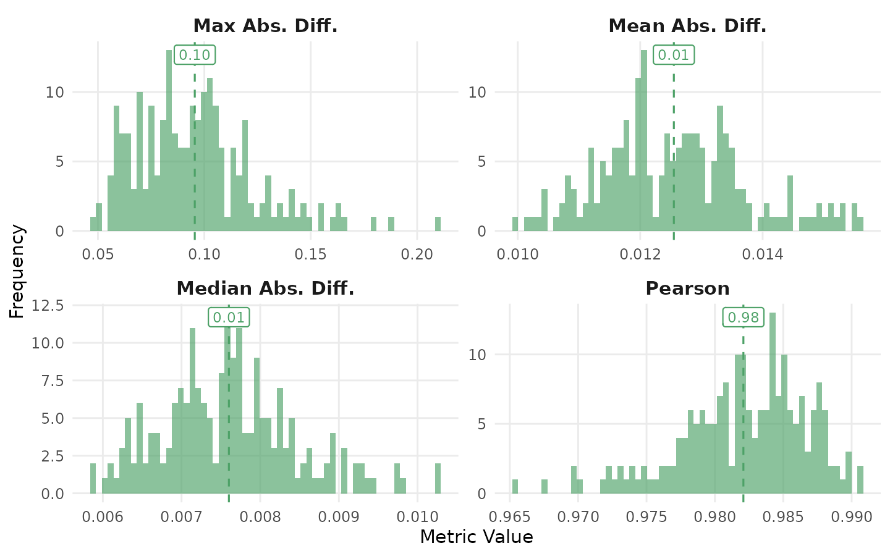
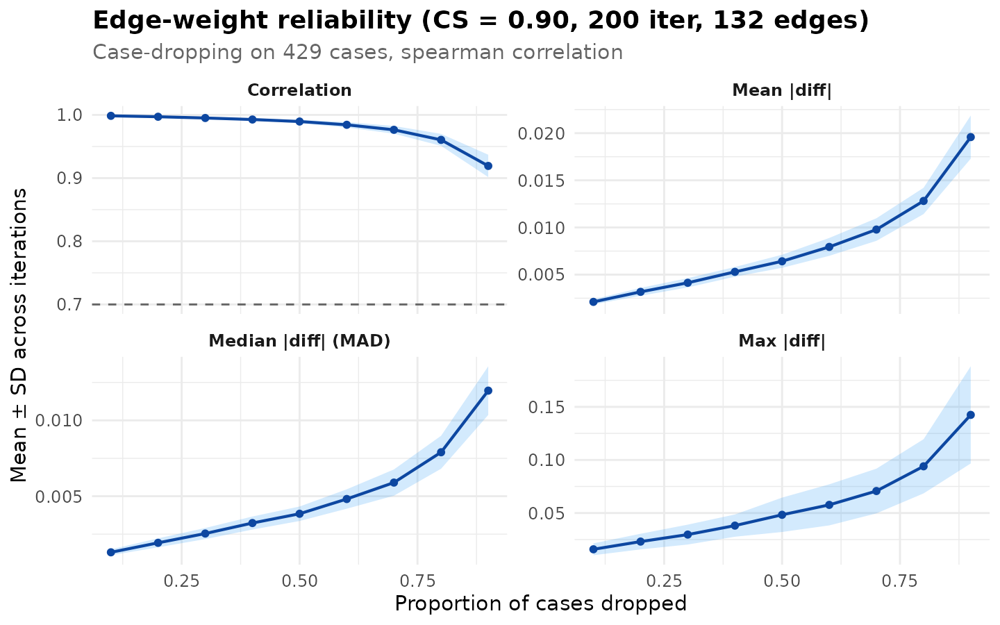
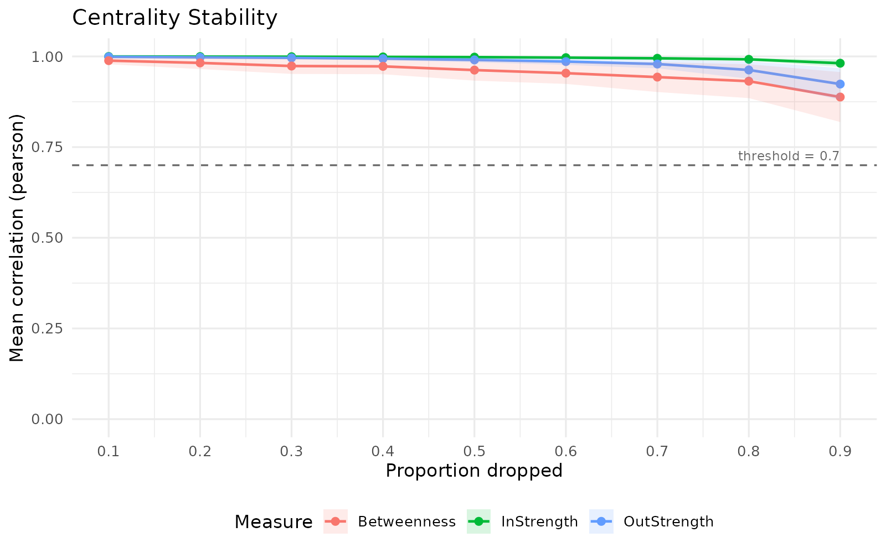
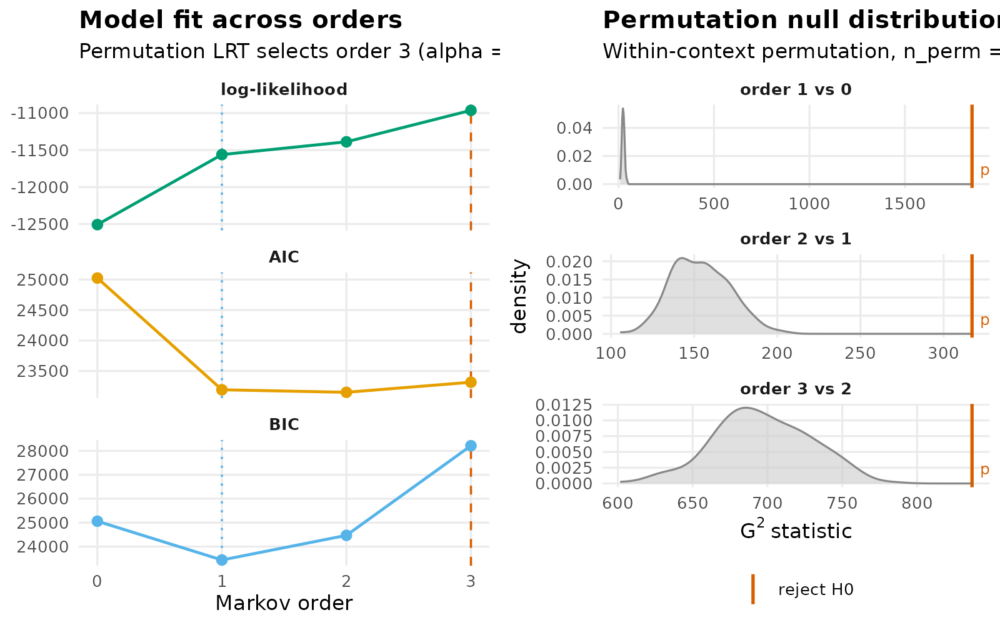

Model assessment for htna networks
Source:vignettes/articles/model-assessment.Rmd
model-assessment.RmdA heterogeneous transition network is a sample-based estimate of a generative process. Each edge weight is a statistic computed from the observed sequences, and as with any statistic the value carries sampling variability. Interpretive claims drawn from a single estimate — that an edge is strong, that one node is more central than another, that a particular state dominates a phase of the trajectory — depend on assumptions about that variability. Model assessment is the procedure by which those assumptions are quantified, before the network is used as evidence.
Four assessments are commonly applied to transition networks (Saqr et
al., 2025) and are exposed by the htna package as wrappers around the
Nestimate implementations:
- Split-half reliability: estimates the agreement between two networks built from independent halves of the corpus.
- Edge-weight case-dropping stability: estimates the proportion of cases that may be removed before the rank-ordering of edge weights deteriorates.
- Centrality stability: estimates the proportion of cases that may be removed before node-level centrality rankings cease to be stable.
- Markov-order adequacy: tests whether a first-order Markov model is sufficient to describe the observed transitions, or whether higher-order dependencies are required.
Each assessment is computed by a single function and visualised by
calling plot() on the result. The htna wrappers preserve
the actor partition ($node_groups,
$actor_levels) on resampled networks, so the assessment
results remain compatible with downstream htna-aware analysis.
Data and baseline network
The example uses the bundled human_ai corpus – Human +
AI events in a single long frame, tagged by an actor_type
column (see ?human_ai). The default htna network is
constructed under the relative-probability scheme
(method = "relative"); the Markov-order test operates
directly on the raw sequence data.
library(htna)
data(human_ai)
net <- build_htna(human_ai, actor_type = "actor_type")Split-half reliability
Split-half reliability quantifies the consistency of the network
estimate across random partitions of the corpus. At each iteration, the
sessions are partitioned uniformly at random into two halves; a network
is estimated on each half; and four discrepancy metrics are computed
between the two estimates: mean absolute deviation, median absolute
deviation, maximum absolute deviation, and the Pearson correlation
between the flattened edge-weight vectors. The procedure is repeated
iter times and the metrics are summarised across
iterations.
The Pearson correlation provides a one-number summary of similarity. Values above 0.95 indicate near-identical estimates between halves; values between 0.90 and 0.95 indicate substantively similar estimates with minor sample-dependent variation; values below 0.85 indicate that interpretation should be tempered.
rel <- reliability_htna(net, iter = 200L, seed = 1L)
rel
#> Split-Half Reliability (200 iterations, split = 50%)
#> Mean Abs. Diff. mean = 0.0125 sd = 0.0012
#> Median Abs. Diff. mean = 0.0076 sd = 0.0009
#> Pearson mean = 0.9821 sd = 0.0047
#> Max Abs. Diff. mean = 0.0955 sd = 0.0280
plot(rel)
Edge-weight case-dropping stability
Case-dropping stability refines reliability by quantifying how much
of the sample may be removed before the ordering of edge
weights changes. For each drop proportion in a fixed grid (default: 0.1
to 0.9 in steps of 0.1), a fraction of the sessions is removed at
random, the network is re-estimated, and the rank correlation (Spearman
by default; configurable via method =) between the
flattened edge-weight vector (off-diagonal by default; see
include_diag) of the reduced network and the original is
recorded. The procedure is repeated iter times per drop
proportion.
The CS-coefficient (Epskamp et al., 2018) is defined as the maximum
drop proportion at which the rank correlation remains above
threshold (default 0.7) in at least certainty
of the iterations (default 0.95). A coefficient of 0.5 indicates that
the edge ranking is robust to removing half of the sample. Conventional
cut-offs (Epskamp et al., 2018) treat CS > 0.25 as acceptable and CS
> 0.5 as preferred for inferential use.
cd <- casedrop_reliability_htna(net, iter = 200L, seed = 1L)
cd
#> Edge-weight Case-dropping Stability
#> Cases (rows of $data) : 429
#> Edges assessed : 132 (diagonal excluded)
#> Iterations / prop : 200
#> Correlation method : spearman
#> CS-coefficient (r) : 0.90 (threshold=0.70, certainty=0.95)
#>
#> Model-level reliability across iterations (mean +/- sd per drop):
#> drop_prop p=0.1 p=0.2 p=0.3 p=0.4 p=0.5 p=0.6 p=0.7 p=0.8 p=0.9
#> mean|diff| 0.002+- 0.000 0.003+- 0.000 0.004+- 0.000 0.005+- 0.001 0.006+- 0.001 0.008+- 0.001 0.010+- 0.001 0.013+- 0.001 0.020+- 0.002
#> MAD 0.001+- 0.000 0.002+- 0.000 0.003+- 0.000 0.003+- 0.000 0.004+- 0.000 0.005+- 0.001 0.006+- 0.001 0.008+- 0.001 0.012+- 0.002
#> cor 0.999+- 0.000 0.997+- 0.001 0.995+- 0.001 0.993+- 0.002 0.990+- 0.003 0.984+- 0.004 0.976+- 0.006 0.960+- 0.009 0.919+- 0.018
#> max|diff| 0.016+- 0.006 0.023+- 0.007 0.030+- 0.009 0.038+- 0.010 0.048+- 0.016 0.058+- 0.019 0.071+- 0.021 0.094+- 0.026 0.142+- 0.046
plot(cd)
The four-panel display shows the across-iteration mean of each metric (mean / median / maximum absolute deviation, and rank correlation) across drop proportions, with ribbons at ±1 SD across iterations. The dashed reference line on the correlation panel marks the threshold used to compute the CS-coefficient.
Centrality stability
Reliability and case-dropping stability address the network as a whole and the edge ranking, respectively. Centrality stability addresses the node-level summaries that are commonly the target of substantive interpretation. Many studies that report on transition networks do not interpret individual edges; they interpret rankings of nodes by centrality measures such as in-strength, out-strength, or betweenness. Such rankings are only safely interpretable when they are themselves stable under resampling.
centrality_stability_htna() applies the case-dropping
procedure to node-level centralities, computing each measure at every
iteration and quantifying the rank consistency of nodes across
iterations. The CS-coefficient is reported per measure.
cs <- centrality_stability_htna(
net,
measures = c("InStrength", "OutStrength", "Betweenness"),
iter = 200L,
seed = 1L
)
cs
#> HTNA Centrality Stability Analysis
#> ===================================
#> Centrality Stability (200 iterations, threshold = 0.7)
#> Drop proportions: 0.1, 0.2, 0.3, 0.4, 0.5, 0.6, 0.7, 0.8, 0.9
#>
#> CS-coefficients:
#> InStrength 0.90
#> OutStrength 0.90
#> Betweenness 0.90
plot(cs)
In-strength and out-strength are typically more stable than path-based measures because they aggregate weighted incoming and outgoing edges directly. Betweenness depends on shortest paths and is sensitive to small changes in edge weights that re-route many paths simultaneously; consequently, its CS-coefficient is often substantially lower than that of strength-based measures. Interpretation by ranking should be limited to measures whose CS-coefficient meets the conventional threshold.
By default centrality_stability_htna() evaluates only
the three measures that produce numerically identical results between
cograph and Nestimate (InStrength,
OutStrength, Betweenness). The remaining six
htna centrality measures (closeness variants, RSP betweenness,
diffusion, weighted clustering) may be assessed by supplying a custom
centrality_fn argument.
Markov-order adequacy
The preceding three assessments take the model — a first-order Markov transition network — as a given and characterise its sample-based variability. Markov-order adequacy addresses a more fundamental question: whether the first-order assumption itself is appropriate for the observed sequences.
markov_order_test_htna() tests the empirical transition
structure against orders 1, 2, …, max_order via
permutation. For each candidate order k, the null hypothesis is
that order-(k-1) is sufficient; the alternative is that
order-k captures dependencies beyond what order-(k-1)
explains. The smallest order whose test fails to reject the null is
reported as the optimal order.
The test operates on raw sequence data rather than on the htna network object, since it requires the empirical sequences directly.
data("ai_simplified")
seqs <- split(ai_simplified$code, ai_simplified$session_id)
seqs <- seqs[lengths(seqs) >= 3L]
length(seqs)
#> [1] 416Sequences shorter than three events do not inform tests beyond order-1 and are excluded.
mo <- markov_order_test_htna(seqs, max_order = 3L, n_perm = 200L,
seed = 1L)
mo$test_table
#> order loglik AIC BIC df g2 p_permutation p_asymptotic
#> 1 0 -12507.50 25025.00 25060.26 NA NA NA NA
#> 2 1 -11561.26 23192.52 23439.32 25 1851.6662 0.004975124 0.000000e+00
#> 3 2 -11388.43 23150.86 24469.46 150 317.0789 0.004975124 5.088532e-14
#> 4 3 -10962.98 23315.97 28216.65 675 836.7299 0.004975124 1.976688e-05
#> significant
#> 1 NA
#> 2 TRUE
#> 3 TRUE
#> 4 TRUE
mo$optimal_order
#> [1] 3
plot(mo)
If optimal_order > 1, the first-order network is
misspecified for the corpus, and a higher-order model is indicated. htna
does not implement higher-order networks directly; users who require
them may construct higher-order or memory-augmented models via
Nestimate::build_hon() or
Nestimate::build_mogen().
Joint interpretation
The four assessments are complementary, addressing distinct levels of the inferential chain:
| Assessment | Quantity assessed | Conventional pass criterion |
|---|---|---|
| Split-half reliability | Whole-network estimate | mean correlation > 0.95 |
| Edge-weight case-drop | Edge-rank ordering | CS-coefficient > 0.5 |
| Centrality stability | Node-rank ordering | CS-coefficient > 0.5 per measure |
| Markov-order test | Model specification | optimal order = 1 |
A network that meets all four criteria supports interpretation at every level — whole network, individual edges, node rankings, and underlying model. A failure on any single criterion identifies the level at which inferential claims should be qualified.
References
Epskamp, S., Borsboom, D., & Fried, E. I. (2018). Estimating psychological networks and their accuracy: A tutorial paper. Behavior Research Methods, 50(1), 195-212.
Saqr, M., López-Pernas, S., Törmänen, T., Kaliisa, R., Misiejuk, K., & Tikka, S. (2025). Transition network analysis: A novel framework for modeling, visualizing, and identifying the temporal patterns of learners and learning processes. Proceedings of the 15th International Learning Analytics and Knowledge Conference, 351–361. https://doi.org/10.1145/3706468.3706513